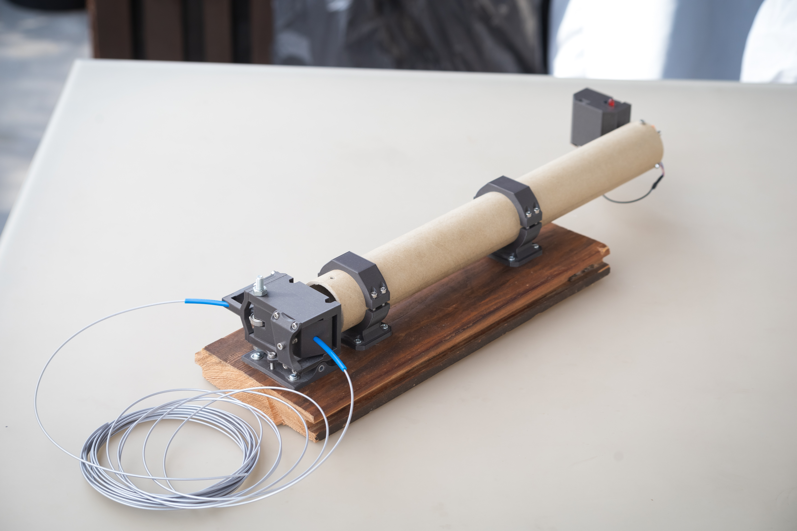
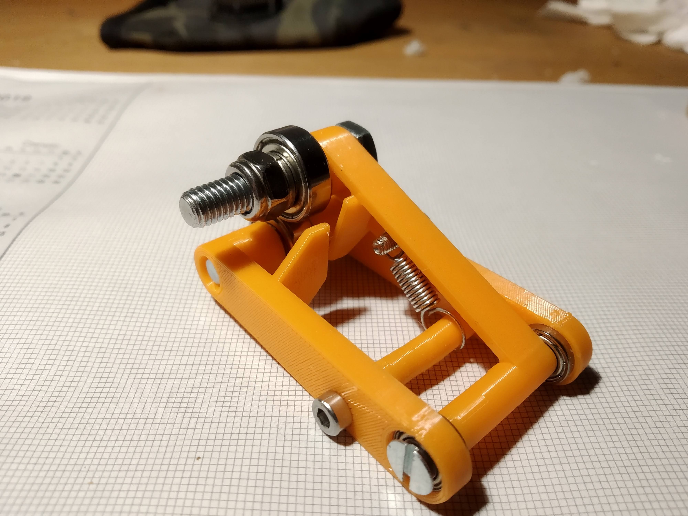
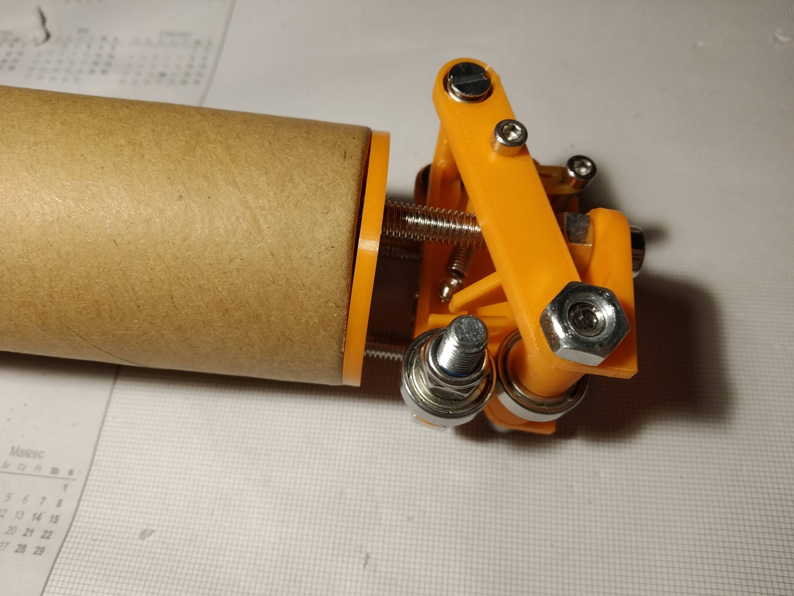
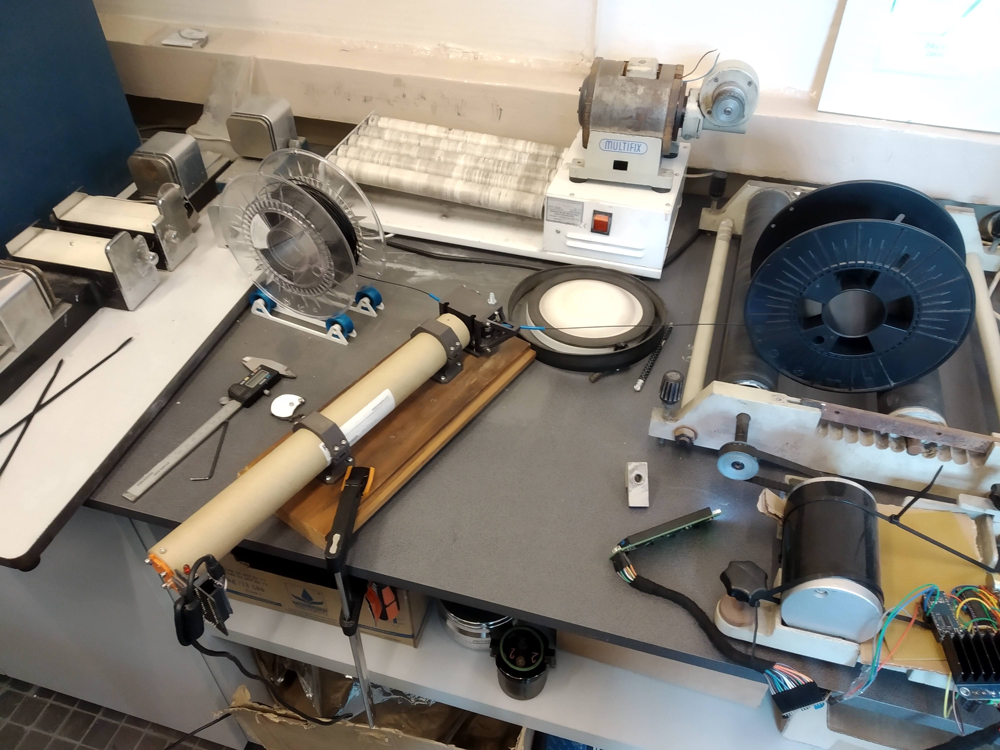
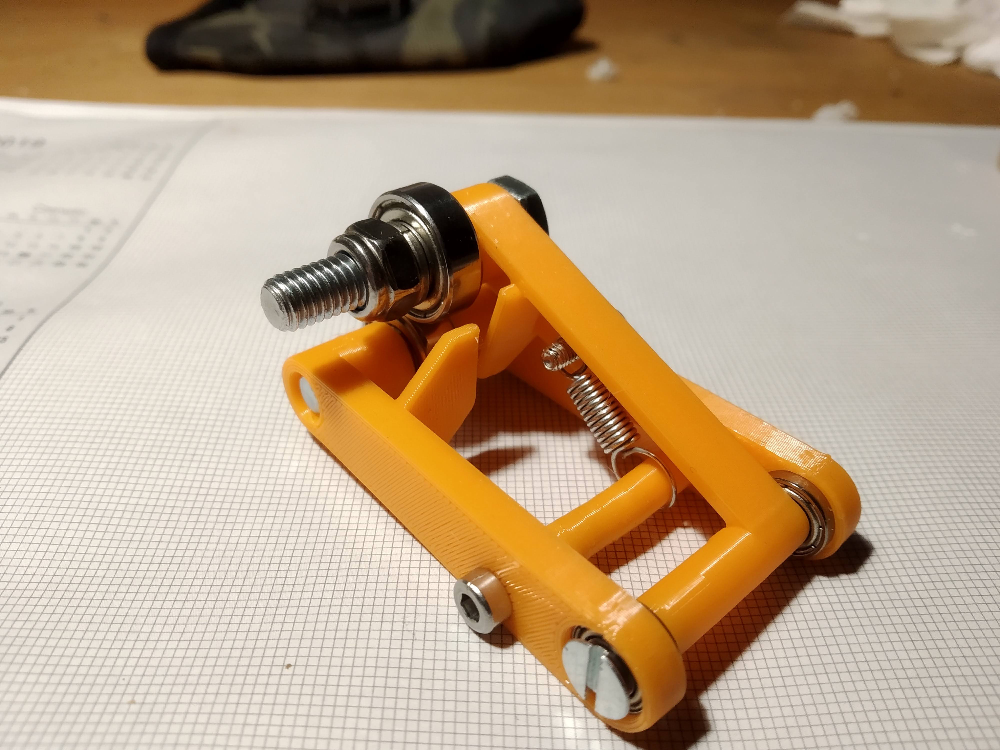
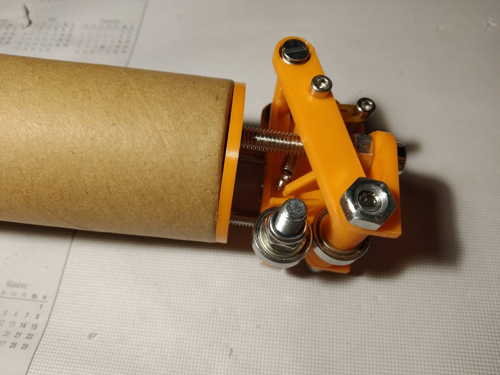
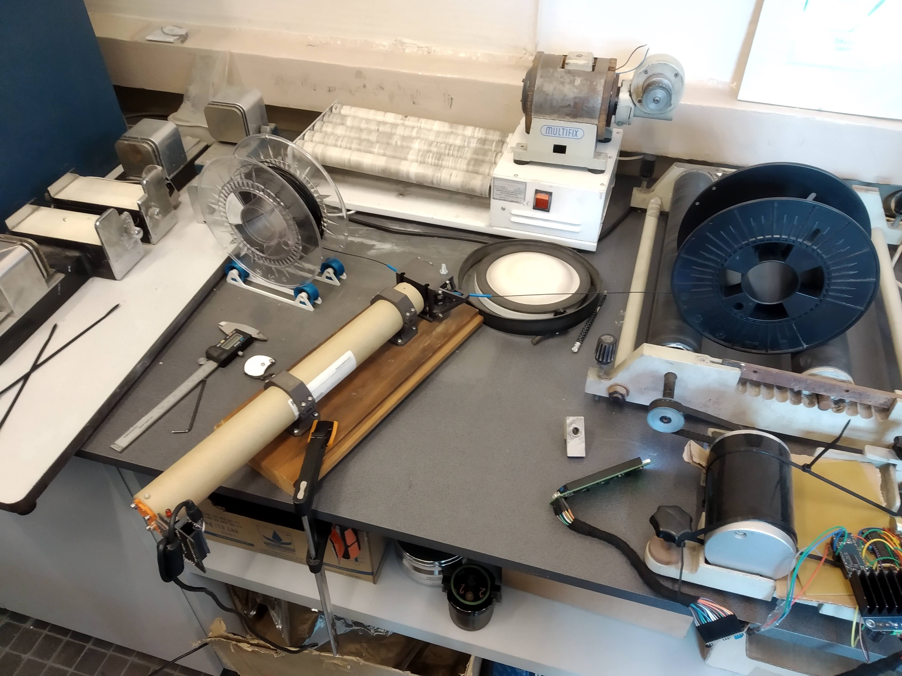

METRIC
Optomechaniczny mikrometr do pomiaru grubości filamentów 
Co to jest i dlaczego?
W 2019 podszedł do mnie znajomy, który zajmował się robieniem swoich własnych filamentów do drukarek (jako projekt badawczy na uczelni). Potrzebował urządzenia do pomiaru, jak dobrze mu te filamenty wychodzą jeśli chodzi o jednostajną grubość. Uznałem że nie powinno to być trudne i zgodziłem się spróbować mu coś takiego zmontować. Wtedy jeszcze nie wiedziałem, że zrealizowanie tego zadania zajmie mi ponad 4 lata.
Założenia projektowe:
- Filament jest przeciągany przez urządzenie, które na podstawie pomiarów tworzy wykres jego średnicy
- Niepewność pomiaru w okolicach 0.1mm (jest to sprawa niejednoznaczna, ale o tym później)
- Obsługa filamentów 1.75mm (mniej więcej, filamenty DIY się bardzo wachają, o tym też później)
- Możliwość zapisu danych prosto na komputer lub na kartę sd
- Niski koszt
- Prosta i intuicyjna obsługa
Co w tym trudnego? Podobne urządzenia są wykożystywane w przemyśle i mają bardzo dobrą precyzję. Nie udało mi się jednak znaleźć żadnych komponentów, czy gotowych urządzeń, będących w stanie zapewnić wymaganą precyzję na hobbistycznym rynku. To co mnie głównie ograniczało, to brak możliwości wykonywania precyzyjnych części czy mechanizmów, jako że nie miałem warsztatu czy nawet drukarki 3D. Co było dalej?
Wersja 1a 02.2019
Pierwsza wersja urządzenia miała bardzo prostą zasadę działania. Dioda laserowa oświetla filament, a po jego drugiej stronie znajduje się fotoresystor, który jest zacieniany. Na podstawie ilości światła docierającej do fotorezystora określamy grubość filamentu.
Nie działało to za bardzo, bo fotorezystor ani żaden inny sensor który testowałem, nie był czuły na całej swojej powieszchni, przez co nie dało się przełożyć jego odczytu na wielkość cienia na niego padającego.
Wersja 1b 01.2020
Jest wiele prostych sposobów na rozwiązanie problemów z poprzedniego rozdziału, ale ja wybrałem dziwniejszy. Zrobiłem to też trochę przewidując inne problemy jakie by na pewno się pojawiły później. Postanowiłem zastosować pewien egzotyczny czujnik, będący zasadniczo jednowymiarową matrycą, składającą się z rzędu 128 fotodiód upakowanych blisko siebie.
Zastąpił on czujnik z poprzedniej wersji, ale reszta pozostała taka sama. Rozwiązanie pozwala przerzucić pomiar grubości zasadniczo do software'u. Głównym ograniczeniem tutaj była rozdzielczość matrycy. Odległość między kolejnymi fotodiodami wynosiła ok. 0.1mm, co w teorii pozwala na założoną dokładność, ale nie uwzględnia innych błędów. Biorąc pod uwagę drgania, ruch filamentu i inne czynniki, nie było możliwości uzyskania zamierzonej niepewności pomiaru.
Jako że czujnik był dostępny tylko w wersji smd, musiałem zaprojektować płytkę. Wyszła mi na tyle dobrze, że dalej służy ona w ostatecznej wersji urządzenia. Co prawda płytka nie jest skomplikowana, wręcz jest bardzo prosta i mało upakowana, jednak jestem z niej bardzo zadowolony, jako że zadziałała za pierwszym razem. Zrobiłem ją w EasyEDA i zamówiłem na JLCPCB. Znajduje się na niej:
- Arduino Nano
- Czujnik liniowy
- Gniazdo na kartę micro SD
- Dioda sygnalizująca stan pracy
- Przycisk funkcyjny
- 2 zworki do trybów zasilania (robiąc płytkę nie wiedziałem jak będzie ostatecznie z zasilaniem)
- złącze na zasilanie diody oświetlającej filament
- złącze na enkoder mierzący prędkość przesuwania filamentu (ostatecznie nie użyte)
- dodatkowo wyprowadzone piny (H2) z czujnika liniowego na wypadek jakby coś było źle zrobione na płytce (służyłaby wtedy po prostu za adapter)
Całe to przedsięwzięcie nie przyniosło jednak oczekiwanych wyników. Przede wszystkim, nie udało mi się kontrolować do końca tego, jak filament szedł przez sensor, a jego mniejsza lub większa odległość od czujnika fałszowała pomiary. Ogólnie zniechęcony średnimi wynikami porzuciłem projekt na prawie 2 lata.
Wersja 2 01.2022
Do powrotu do projektu skłoniło mnie to, że kupiłem sobie drukarkę 3D. Dzięki temu mogłem wiele szybciej prototypować kolejne wersje urządzenia i w przyjemniejszy sposób dojść do czegoś co działało. Wymyśliłem więc całkowicie nową wersję czujnika, opierajacą się o optomechaniczne wzmocnienie sygnału. Jest to może trochę przekombinowane, ale było pierwszą od lat szansą na przełamanie problemów, które prześladowały ten projekt. Oto jak to działa:
Filament jest prowadzony przez "wózek" składający się z dwóch łożysk umieszczonych na ramionach, z których jedno jest statyczne. Ramiona zaciskają się na filamencie dzięki sprężynie, przez co łożyska jadą po nim. Na ruchomym ramieniu umieszczone jest lusterko. Laser umieszczony w pewnej odległości od wózka jest skierowany na to lusterko. Jego promień po odbiciu trafia na matrycę (opisaną w poprzednim rozdziale), gdzie rejestrowane jest jego położenie. Jako, że lusterko jest przymocowane do ruchomego ramienia, wychylenie promienia jest proporcjonalne do grubości filamentu przechodzącego między łożyskami wózka.
Istotnym aspektem tej wersji jest zerowanie. Żeby promień lasera trafił w czujnik, lusterko musi być poprawnie ustawione. Wymaga to zerowania w dwóch osiach. Jedna oś jest obsługiwana przez pochylanie całej obudowy wózka względem podstawy. Druga, jest regulowna za pomocą odchylania statycznego ramienia śrubą, która znajduje się z tyłu obudowy. Oznacza to też, że każdy pomiar grubości żyłki jest pomiarem względnym, który zależy od wcześniejszej kalibracji dla filamentu znanej średnicy.
Pierwsze wersje mechanizmu były pomarańczowe, a ostateczna wersja jest szara. W ostatecznej wersji, system optomechaniczny zapewnia około 10x wzmocnienie sygnału filament -> sensor. Cały czas głównym problemem dla dokładności pomiaru są zakłócenia. Jest jeszcze parę rzeczy któ©e mogę poprawić, jednak szum wywoływany przez samo przeciąganie filamentu powoduje znaczące zakłucenia. Mimo ich, wartości mierzone mieszczą się jednak w zamierzonej dokładności.
 




